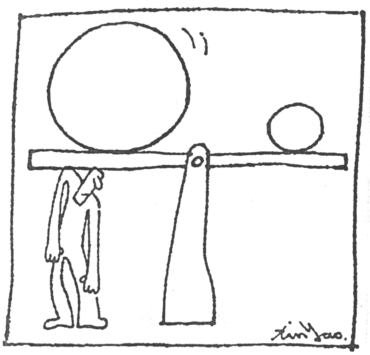

编者：是什么样的原因促使您写作这样的一本书？
作者：由于工作上长期的劳累，使我健康发生了问题，后来我遇到两个很好的中医按摩师，他们很快地使我重拾健康。发现原来健康不是现代医学告诉我们的那么困难和复杂，而是非常平凡而简单的一些观念和方法，因此，希望把这个经验分享给更多的人。
编者：为什么书名叫“人体使用手册”？这个名字在我们读来有点拗口，我们一般习惯叫保健手册之类的。此书名代表了您对人体保健持什么理念？
作者：我的工程师背景，使我在读《黄帝内经》时，觉得那根本是一本《人体使用手册》，教导我们如何生活，生病了如何处理。同时在研究中医时，也觉得人体似乎是经过设计的完美物体，许多地方都能看出设计者的斧凿痕迹。
例如，中医把人体分为脏和腑，脏指的是心、肝、脾、肺、肾，腑指的是大肠、小肠、胃、胆、膀胱和包括了胸腹腔的三焦，对人体而言，脏的重要性高于腑。脏的经络都在身体的正面，以及手脚的内侧，腑的经络则都在身体的背面和手脚的外侧。当人体受到外力威胁时，只要蹲下来蜷曲身体，所有器脏的经络都在内侧，很不容易受伤，这种设计是考虑非常周详的。
如果人体是被设计出来的，那就应该配一本《使用手册》，教导人们如何正确的使用身体，《黄帝内经》似乎就是设计者留给我们的使用手册，只是古代的用语不容易理解，因此，我想写一本让人很容易理解的《使用手册》。
许多人类设计的产品，例如电脑、电视等，都配备了使用手册，只要依着使用手册使用，这些设备都非常不容易出现故障。人体是自然界设计的更完美产品，如果每个人都能正确地使用身体，疾病应该非常不容易发生。
编者：在成书之前，听说《人体使用手册》的草稿在网络上流传了3年？网友的评价如何？最好的评价是什么？最差的评价是什么？
作者：许多网友从这本书中得到更真实的身体知识，许多人试了一式三招，健康真的改善了，于是才会一传十、十传百地流传出去。
这本书好的评价很多，主要是那些得到健康的人写的，许多人都希望更多的朋友看这本书，最多的评价是认为这本书是“无私的分享”。差的评价倒很少，最多认为这是反科学的一本书。
编者：现在是资讯社会，有很多东西，闪现一下就消失了，特别是在网络上，而您的书在网络上有如此强的生命力，您认为最大的原因是什么？

欲望是健康的最大负担
作者：这本书的流传是无意间造成的，开始时，经常有朋友问我健康的问题，我正在写这本书，为了能让朋友很快了解，因此就把还没有完成的书稿传给他们看，希望他们自己能理解，省得我多费唇舌。后来朋友的朋友有需要，朋友问我方不方便传给别人？有没有版权的顾虑？由于写书的本意就是助人，朋友想要送的人必定是健康出了问题，和他的健康相比，版权不是那么值钱，因此毫不考虑地就同意了，也告知不需考虑版权的问题，于是就传开了。
而这本书中的方法，是毫无保留地把真实的经验写出来，又是免费分享的。许多人都难以相信在网上会有这样的书，而且又有人验证之后发现书中的方法是真实有用的。许多人以为那些在网上供人下载的版本是盗版的，还写信通知我，其实在起步时我就没有在意过版权。这样的分享，反而促使我后来平面版的出版更容易销售，这是始料未及的。因此，“真诚和无私的分享”是这本书最重要的生命力。
编者：读完全书，发现您对传统中医极为自信？这种自信来源于什么？
作者：系统学是我最擅长的科学，从系统学分析，西医有许多不合逻辑的理论，中医的古书则很难找到错误的地方。同时我研究过东西方医学的发展史，深知西方医学在慢性病方面从来就没有真正的理论。而中医的各种理论和方法，具有很好的逻辑性，这些理论可以解释各种慢性病，在理论方面，中医的发展远较西医进步数千年。
我对中医的自信则来自于自己对中医的理解，虽然不敢说融会贯通，但对于大多数的慢性病都能有相当程度的理解，经常能够准确地协助朋友解除病痛。
编者：书里非常强调日常保健的基本功课，请问这个日常保健的“一式三招”具体指什么？您身边的人都有实行这个一式三招吗？他们有什么感觉？
作者：一式三招指的是早睡、敲胆经和按摩心包经。
我的家人和朋友，许多人都实施一式三招，特别是一些重病患者找我帮忙，都是从一式三招开始，很快就能看到成果。
由于一式三招太简单了，许多人开始时都持很高的怀疑，但是实施一段时间之后，病痛就开始减轻了，精神体力也开始变好了，失眠的人也开始睡得着了。
有一个医生朋友，本来学的是西医，行医一段时间之后，觉得他自己的医术无法真正地帮助病人，于是再去学中医。也许是学得不对，因此，还是觉得不足，又去学气功，始终都没有找到真正能帮助病人的方法。我们有机会认识之后，他学了这一式三招，也感受到这种方法的好处，很感慨地说“踏破铁鞋无觅处，得来全不费功夫”，原来是这么简单的道理和方法。他在台湾中部开一家小医院，可是却很少开药给病人，他最常开的处方就是这一式三招。
编者：您在书中挑战西医的一些治疗法则，一般病人都是弱势群体，能提出这样的质疑，这需要极大的勇气，您这些勇气是从哪里来的？
作者：“科学进步，医学昌明”是我们从小就被教导的概念，可是环顾四周的亲朋好友，却又有那么多不能治的慢性病。我在企业界工作，这种话听起来就像一个公司每天都在赔钱，经营者却用许多美丽的谎言，安慰那些投资的股东一样。明明面对大部分的慢性病都束手无策，却又不断地教育整个社会现在“科学进步，医学昌明”，建立医学界不可侵犯的权威，掩饰医学体系的无能。
“科学进步，医学昌明”这句话已经传了一两百年。20世纪初或者更早，人们就认为已经“科学进步，医学昌明”，可是当时连电脑都没有，现在回头看起来很可笑。今天我们这么说，一百年后当人类的科学更加进步，我们的子孙再回头看今天的我们，必定也觉得很可笑。
我们发现了的书中所列举的那些检查方法的不合理，以及各种疾病逻辑的误谬，在逻辑上西医有许多理论和方法是经不起仔细推敲的。也就是真理在我们这边，这就是我的勇气基础。
当年哥白尼发表“地圆说”时，不也违背了整个主流科学界的认知，虽然今天看当年的那些主流科学界，可能有许多人非常不耻他们的行径，但相同的故事可能在任何一个年代里发生。今天我不过拿中国人祖先留下来的东西来指出西医的问题，比起当年哥白尼的勇气，还差得很远呢。
平时我经常协助朋友对抗疾病，书中的各种慢性病的逻辑，其实都是我们的经验，相信未来都会慢慢的被证实。每当我们克服一种疾病，就发现一种西医理论的误谬，也找到一种用现代语言重新诠释中医的方法。
其实我想做的不只是这类的质疑，而是希望能有医界的人也开始用这种态度来重新检讨他们的理论。希望他们不要一味地在枝微末节的技术研究中浪费时间，应该回到最基本的哲学层次理论的重建工作。基本的方向错了，再多的研究都是没有意义的。
我非常寄望这本书在大陆的出版，我深信未来必定是中国科学家才能发展出解决慢性病的技术，希望这一天早日到来。有人说“21世纪是中国人的世纪”，至少在医学技术方面，我深信如此。
改革开放后的中国，一切向西方看齐，其实最好的东西并不在西方，而在我们自己祖宗留下来的遗产里。
编者：您在书内提到，实行“一式三招”之后，“有些人体力很差，经常很容易疲倦，到医院又查不出什么毛病，在试行了这套方法三到四个月之后，体检时就可能出现血糖升高的糖尿病症状，这些都是好转的现象……”请问这种情况的人多吗？我想如果知道会产生这个结果，很多人都不敢实行了，我就有点怕，您怎么看？
作者：在西方国家及台湾，流行许多的另类疗法，如西方的同类疗法（或称顺势疗法），在治疗的过程都会出现这一类“好转反应”。因此，这类问题许多人都能接受。
实际上，如果是重病患者，在康复过程中还会出现远比这些反应严重许多倍的好转反应。在我的Blog中，就有一篇最近我帮助过的大肠癌病人家属写给我的信，他的主要感想是“康复的路比放弃困难得多”。请参考http://alexwu2300.blogspot.com/
编者：书里提到的保健常识，有些是不需要技巧的，只要有这个理念然后坚持就行，例如“早睡早起”，但有些我认为是很专业的，例如“敲胆经”和“按摩心包经”，请问实行这两条时有什么禁忌？任何体质的人都可以这样做吗？每天都可以这样做吗？
健康不存在了，再多的0又有什么意义。
作者：这两条经络是身体大多数时候都能按摩的，对于大多数人，除了避免在饭后一小时内实施之外，没有什么禁忌。
但是孕妇是不能敲胆经的，还有血友病人有可能会使微血管破裂而内出血，也不适合。
编者：简单的东西其实是最难做到的，例如“不生气”和“保持洁净的肠胃”，但我想您肯定做得很好，请问您有什么经验可以分享？
作者：我是一个很平凡的人，在平常的工作和生活中同样地会遇到许多不平的事，还是会生气。以前会把这些怒气忍下来。学了中医之后，知道忍下的气还是很伤身体的，因此，就改变了这种做法，只要有不平就尝试着用比较婉转的方法和对方沟通，在小事上就把压力泄除，这样可以避免将怒气累积到一定程度，再爆发开来所造成的身体和人际关系致命的伤害。
有时还是不能避免生气，生了气回家赶紧按摩太冲穴，把肝气疏泄出去，把身体受到的伤害减到最低。
在学习中医之前，我很喜欢吃生鱼片，也常吃生的龙虾，几乎从来不拉肚子。自己调养血气一段时间之后，肠胃即开始修复工作，由于肠胃的问题实在太多，一修就是很多年。最近有一次参加朋友的宴会，看到生鱼片，忍不住又吃了一片，结果回家拉了一个星期的肚子，可是那天一起吃的朋友们，却没有人有任何问题。在大多数人的认知，这是我的肠子不好所致，我自己知道这是我调养多年的成果。我的肠子又变干净了，具备了婴儿般灵敏的反应，只要有不洁的食物进入，它必定会将之清除干净。
我有两个孩子，以往我们吃东西都不太忌讳互相的接触，经常把自己吃一半的食物分享给孩子。结果孩子的肠子就有许多问题，脸颊上长了一些小痘子。学了中医之后，才知道那些痘子和小肠有密切的关系，于是在家中严格实施公筷母匙，杜绝彼此之间唾液交换的可能性，再加上一式三招，没多久，小孩的脸色就开始变得红润，也不再有便秘的问题了。
编者：您周围的朋友在实行这个一式三招的过程中，有什么有趣的事情发生？可以讲一下吗？
作者：在经验里女性比较容易接受我的方法，这是比较有趣的现象。我们平时的经验，似乎男人比较容易接受科技的产品，可是这种未被完全证实的理论，却是女人比较容易接受。似乎男人比较迷信权威，女人则比较相信自己的直觉。虽然我是男人，但是我的认知是女人远比男人更具灵性和智慧。
有一些现象是本来难以想象的。曾经有一群朋友一起实施我的方法，其中大多数人体重都上升了不少，但外形却没有变胖。有一个女性朋友，从四十九公斤升高到五十六公斤，但所有的衣服都没有更换。我的判断是她体内增加了许多血液，而那些血液都存在体内的脏器，所以外形并没有变化。由于缺乏仪器的验证，我无法证实那些重量都是血液，但一个人的血液可能会有五至十公斤重量的变化，这是很惊人的。
编者：听说您此书的繁体中文版今年中已经在台湾出版？还一直在畅销书排行榜上？一般是些什么样的读者买此书？
作者：今年六月一日我的书在台湾出版，完全没有行销的广告宣传，一个月内就在金石堂（台湾的大型连锁书店）和博客来（台湾最大的网络书店）进入排行榜。由于我没有实际的统计资料，很难知道是什么样的读者买这本书，从读者来信，似乎是年龄层在二十五岁以上，六十五岁以下的都有。特别是健康有问题的人特别多，许多网站和报纸都主动地帮我传播这个消息。
有一个有趣的现象，在出版的初期，销量很大，大多数是网上看过我的书的人买的，第一波的热潮过后，销量开始下降，过了一个月，销量又开始逐渐回升。前期的大销量，主要是期待很久的网友买的，后面的销量回升，则是看过的人一传十、十传百的效果，许多单位都是集体透过网络购买。
大概网络上很少有这样的先例，在出版之前，出版商担心大多数的网友都看过了我的书，会不会不想花钱买？结果正好相反，大多数买我的书的人，都是网上看过的，而且多数人都不只买一本，这本书很可能是最多人拿来当礼物的书，有人在网上封这本书为本年度馈赠亲友的最佳礼物。在台湾，平面书出版之前，许多人都把这本书打印出来看，也有单位内部集体打印后卖给同事。
我本来不知道这本书在网上的流传状况，直到有一天和新见面的朋友交换名片，新朋友看到我的名字当场惊叫，吓了我一跳，他说正在读我的书。我从未出书，丈二金刚摸不着头脑，以为他弄错了，过一会儿他拿出打印的书给我看，我才发现这本书已经传开了。很快地我也收到朋友传给我的书，再到网上搜寻，才发现网上有很多可以下载这本书的网站，也有很多人在讨论这本书。
编者：现在的简体中文版在广东出版，请问它与台湾版，与网络版，在内容上有什么调整？
作者：由于我不会画图，随便贴上别的书中的图，担心会侵犯别人的版权，因此在网络版的书中没有插图。平面版的书，由于专业出版社的协助，找了专人画图，使书本读起来更方便易懂。另外，为了让读者有更深的印象，我特地请上海著名的漫画家郑辛遥老师为我画了二十幅漫画，表达出这本书中许多重要的观念，这也是网络版中没有的。
平面版中增加了一篇寒气，那是我最近的研究心得，是非常重要的论述。我接触的所有重病患者，身体内最大的问题就是寒气。虽然这方面在古书中有许多论述，但至今没有用现代物理或化学方法的描述，我提出的方法，限于我的环境，无法提供科学化的验证，但在我自己临床的经验，用这个方法和逻辑是能圆满解释各种不同寒气的症状。
由于简体版的出版时间较繁体版晚了几个月，花城出版社组织了最好的工作班子来企划这本书，因此在版面的选择和图片的制作上都记取台湾版的缺失，做了许多改正。
2005.9.6